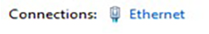
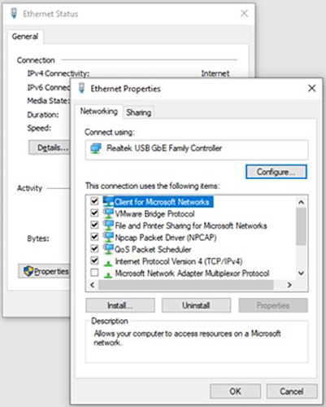
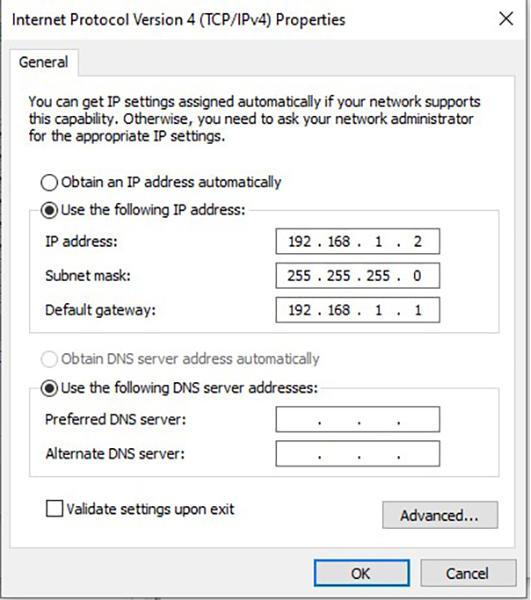
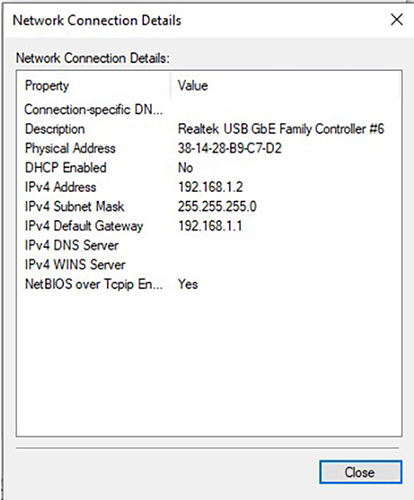

- Object ID: 00000018WIA3090F090GYZ
- Topic ID: id_2038704 Version: 1.8
- Date: Jul 28, 2025 5:44:37 PM
Connecting the laptop to the Cisco router for initial configuration
Connect the laptop to the Cisco router as part of the initial configuration.
Procedure
- Power on the Cisco router by plugging the power adaptor into the router. Wait approximately 30 minutes and make sure all three activity indicator lights turn solid green.
- Connect a LAN cable to LAN port 2 on the back of the router.
- Turn off WiFi on the laptop.
- Connect the other end of the LAN cable to the laptop. If the laptop does not have a LAN port, you may need an adaptor to connect the LAN cable to the laptop.
- Open the Control Panel on the laptop and click Network and Sharing Center.
- In the View your active networks section, click the Ethernet link next to Connections. If the laptop previously had multiple Ethernet connections, the Ethernet link might have integer numbers in the name. For example, Ethernet 1.
Figure 1. Ethernet link 
- In the Ethernet Status dialog box, click Properties. Click Yes on the User Account Control dialog box that appears.
Result
The Ethernet Properties dialog box opens.Figure 2. Ethernet Properties 
- Select Internet Protocol Version 4 (TCP/IPv4) and click Properties.
- In the Internet Protocol Version 4 (TCP/IPv4) dialog box, fill the following fields:
- IP address: 192.168.1.2
- Subnet mask: 255.255.255.0
- Default gateway: 192.168.1.1
Figure 3. Internet Protocol Version 4 (TCP/IPv4) Properties 
- Click OK twice.
- Disconnect the LAN cable and reconnect it after 5 seconds. The disconnection can be done either from the laptop or from the Cisco router.
- Wait 10 seconds. In the Ethernet Status dialog box, click Details. The IPv4 Address value shows as 192.168.1.2.
Figure 4. Network Connection Details 
- Click Close twice.
- Close the Network and Sharing Center dialog box.